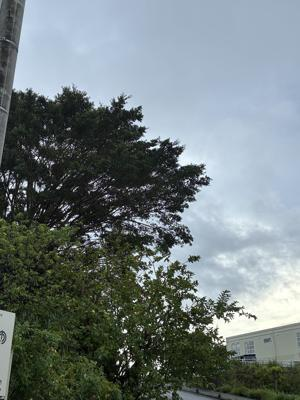
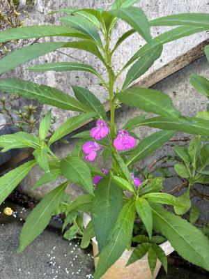
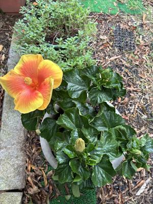
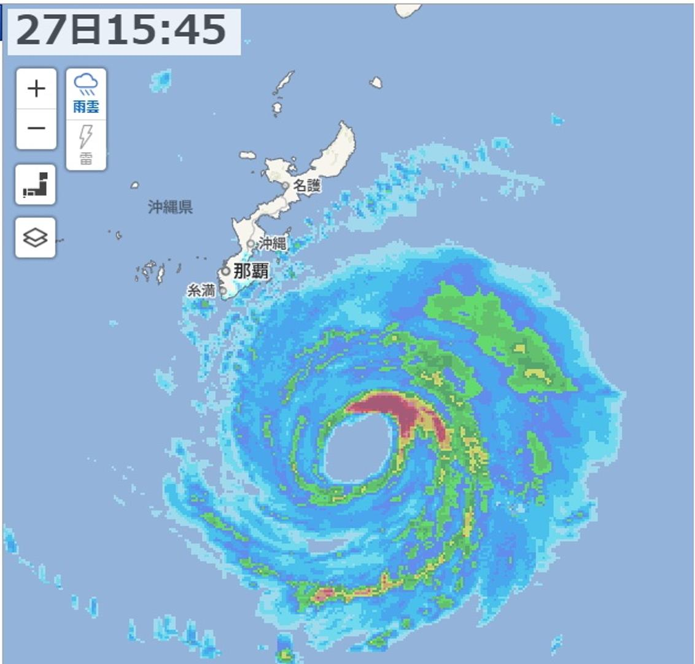

うるがいの話 ある日
最新: 不整脈について【うるがいの話 ある日】とは 一日だけのプログです
『うるがいの話』の最新一日だけのプログで、通信料が少なく経済的だ。カニの画像をクリックすると全ての日付が載る『うるがいの話』サイトを表示します
|
|
【うるがいの話】 うるがい(ｳﾙｶﾞｲ urugai)とは、『もずくがに』の名前でとても大きくなります。 |
|---|---|
|
|
【カミマヤーの話】 猫のことを方言でマヤーといいます。カミマヤー（kamimayaa）とは、神の猫のことです。 |
|
【たながぁの音楽】 たながぁ（ﾀﾅｶﾞｰ tanagaa）とは手長えびのことで、何種類かあり大きいのは車 エビぐらいになります。 |

|
【ぶながぁの話】 ぶながぁ(ﾌﾞﾅｶﾞｰ bunagaa)とは、赤い髪の毛、赤い身体、そして身長は１ｍ２０ｃｍ ぐらい、川の蟹を食べているの目撃された。場所は沖縄県国頭郡大宜味村のと ある村僕の隣近所に住んでいる爺さんから、聞いた話です。 |
|
|
【ギーマの話】 ギーマ(giima)とは、山原の里山に咲くスズランに似た、 花を付けます。実は食べられます、 気が付くと口の周りが紫になっています。 |
2026年09月27日 (日）不整脈について
16:17

今朝から、心臓に痛みがあります、コワイっすね。まだ、軽い痛
みが続いています。２０２０年２月に、琉大病院で『カテーテル
アブレーション』の手術で不整脈を止めました。手術した医者が
今、主治医です。医者曰く、不整脈は復活することがあるって！
コワイですね。
心房細動を通常の脈に戻す治療として、症状が慢性化する前に、
抗不整脈薬を投与し、鎮静化を図るという方法がある。しかし抗
不整脈薬は必ずしも万能ではなく、内服しても不整脈が固定して
しまう場合も多い。また心房細動が慢性化すると抗不整脈薬の効
果は期待できないとされる。
根治治療としてはアブレーションがあり、これは手足の太い血管
からカテーテルと呼ばれる細い管を入れて心臓まで伸ばし、原因
となっている心臓の部位を焼き切ってしまう治療である。侵襲的
な治療である一方で、その成功率は、症状が慢性化していない場
合で６０から８０％程度、慢性化した場合では５０から６０％で
あり、根治が常に見込める方法 とは言い難い。
さらにアブレーションによっていちど正常な脈を取り戻したとし
ても、再び心房細動が顔を出す場合もある。実際、８０歳にして
エベレスト登頂を果たした、プロスキーヤーで登山家の三浦雄一
郎さんは、心房細動再発のために二度アブレーションを受けてい
る。
ネ、コワイでしょう。

ウォーキングの途中、花屋さんで見かけたグラデーションが見事
な、ハイビスカスを１，４８０円で購入しました。千５百円を小
母さんに、渡したら２百円がお釣りで渡されました？、２０円の
間違いですよと、２０円に変えてもらいました。

きょうの夕方は、外へが出られないでしょう。強風の中、雨が吹
き付けているから。台風２６号の位置だべ
